To compare the protein expression profiles of plant leaves grown under drought (stress) and normal conditions using 2D gel electrophoresis.

Theory
Experiment-3: Gel-based Proteomics to Analyze Plant Proteome
Theory :-
Plants have appreciable amount of complexity with respect to protein networks. Studying the proteome of plants could help in providing a comparative analysis with closely related proteomes of other organisms. Some plants such as Arabidopsis thaliana, which is commonly used as a model organism, are often studied at the proteome level to gain deeper insights into the various biological processes. Some plants have therapeutic values and are often studied to get more information of the protein nature, when exposed to several stress responses. In this section, we have described the procedure for analysis of plant leaf proteome using 2DE. Experimental plan involves the collection of plant leaf, protein extraction followed by separation of proteins on 1st and 2nd dimension. For detail theory of 2DE users are advised to see the Experiment 1.
Preparation of sample:
- Around 300 mg of fresh leaf is collected.
- First of all the leaves must be homogenized properly using a clean mortar and pestle.
- Liquid nitrogen is added to the homogenized leaves to freeze and solidify rapidly. This solidified leaf parts are then mashed thoroughly until a powder is obtained.
- To the powder, 500 µL of lysis buffer (acetone, 10% TCA, 0.07% DTT) is added and the contents are mashed vigorously to prepare a homogenous mixture. More lysis buffer can be added, if required, to make the process efficient. Once it is finely homogenized, the volume is made up to 1.5 mL and this mixture is kept at -20°C for 1 h.
- It is then centrifuged at 14,000 g for 30 min at 4°C. This enables the formation of a pellet of proteins and the supernatant can be discarded.
- Chilled acetone with 0.07% DTT is then added to the pellet and vortexed briefly.
- The mixture is again centrifuged at 14,000 g for 30 min at 4°C, after which the supernatant is discarded. This step is repeated 3 more times.
Figure 1.Protein extraction from the plant leaves. (a) Fresh leaves, clean the leaves properly (b) treat the leaves with liquid nitrogen and start grounding (c) fine homogenous paste prepared using buffer (d) debris precipitated using centrifugationn
- After washing step, the pellet is left to dry at room temperature for about 40 min. Ensure that the pellet is totally dry.
- The dry pellet is then dissolved in 400 µL of rehydration buffer (composition same as mentioned in section 1: C) and vortexed briefly. This is then stored overnight at 4°C for protein extraction.
- Next day, the mixture is centrifuged at 14,000 g for 15 min at 4°C.
- The supernatant containing the proteins are separated carefully and stored in a fresh microcentrifuge tube at -20°C until further use
Figure 2.Image of a typical 2D gel showing plant proteome separated on a 4-7 pH range IPG strip.

Procedure
1. PLANT PROTEIN EXTRACTION BY TCA-ACETONE METHOD
Materials required
- Fresh plant leaves, liquid nitrogen, acetone, TCA, DTT and wash buffer.
- Centrifuge, pestle and mortar.
Step by step Procedure:
- Collect fresh, clean leaves from the plant
- Weigh 300 mg of these leaves and cut in small pieces.
- Keep equal amount of leaves at stress and normal conditions.
- Keep little amount of liquid nitrogen in mortar and pestle to bring down the temperature.
- Homogenize the leaves using a clean pestle and mortar in the presence of liquid nitrogen.
- Grind the tissue well until a fine powder is obtained, the work must be carried out in the presence of ice-bath to maintain the temperature.
- Add 500 μL of lysis buffer to the crushed plant leaves, and continue grinding the tissue to obtain a paste. Add more of lysis buffer if required for proper grinding until a uniform paste is formed.
- Later transfers the paste to a fresh tube, make sure everything is transferred.
- Now make the total volume in the tube to 1.5 mL with lysis buffer.
- Vortex briefly and keep the homogenous solution at -20°C for 1 h.
- Later centrifuge the mixture at 14,000 g for 30 min at 4°C.
- Remove the supernatant and wash the resultant pellet 3 to 4 times with chilled acetone containing 0.07% DTT until the green color goes off.
- Dry the pellet at room temperature for about 30-40 min till the pellet is completely dry, free of acetone smell.
- Dissolve the pellet in 400 μL of rehydration buffer and store overnight at 4°C.
- Next day, centrifuge the contents at 14,000 g for 15 min at 4°C.
- After centrifugation, collect the supernatant in a clean, separate tube, mark it appropriately and store at -20°C until further use.
| 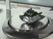 | ||||
| Label tubes for assay | Add the sample to respective tube | Addition of Bradford | Color development after addition of dye | Read the O.D on Spectrophotometer |
| Label tubes for assay | Add the sample to respective tube | Addition of Bradford | Color development after addition of dye |
2.QUANTIFICATION OF PLANT SAMPLE
Materials required
- Bradford color reagent, rehydration buffer, sample, distilled water.
- Spectrophotometer, vortex mixer
Step by step Procedure:
- Prepare the desired quantity of Bradford color reagent.
- Label the tubes as ‘blank’, ‘standards’ and ‘samples’.
- BSA can be taken as the standard. Prepare various dilutions of the BSA standard in different tubes.
- Take 5 µL of standard and samples in their respective labeled tubes.
- Add 1mL of Bradford color reagent to all the tubes including blank and standards.
- Incubate the tubes at room temperature for 5 min
- Then measure the optical density of each tube using a spectrophotometer at 595 nm.
- Subtract the OD of the blank from all other readings to obtain the actual OD.
- Plot a linear standard curve of OD of the standards against their respective concentrations.
- Plot the OD of the unknown samples and then extrapolate to the concentration axis to determine the unknown concentration.
 | 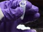 | 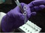 | 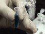 |  |
| Label tubes for assay | Add the sample to respective tube | Addition of Bradford | Color development after addition of dye | Read the O.D on Spectrophotometer |
3. ISOELECTRIC FOCUSING (IEF)
Rehydration of IPG strip: Materials required
- IPG strips-24 cm pH 4-7.
- Rehydration solution- 8 M urea, CHAPS (2% w/v), BPB (0.002%), IPG Buffer 0.5% (v/v).
- IPG buffer and DTT (should be added just before use).
- 5 µL IPG buffer [pH 4-7] and 6.2 mg of DTT is added to an aliquot of 1 mL of rehydration solution.
Step by step Procedure:
- Level the re-swelling tray before starting the experiment, thaw the tube containing the proteins on ice and then centrifuge at 1000 g for 1 min at 4°C.
- . A maximum of 1.2 mg of protein (control/ drug treated) and total of 450 µL protein containing solution can be loaded on each strip. Therefore, calculate the volume of suspension accordingly and add the appropriate volume of both sample and rehydration buffer into a fresh tube. [if your sample volume is 90 µL then; 360 µL rehydration solutions+ 90 µL protein solution (from the upper layer of the tubes) = Total 450 µL].
- Vortex, give a brief spin for settling any debris.
- Add the sample into the tray with a single streak.
- Place the strips in the channels with the gel side facing down and the ‘+’ sign on the strip placed against the sloped end of the channel.
- Allow the strips to absorb the protein solution for 30 min.
- Clean the IEF tray with non-ionic detergent. Wipe with dust free paper.Check the level of the IEF tray to ensure that it is on a flat, smooth surface.
- Place the rehydrated strips carefully in the IEF tray of IEF machine with the gel side facing upwards and the ‘+’ sign towards the top, as indicated on the tray. (please match the that positive end of the strip matches with that of negative end of machine’s electrode).
- Cover the strip with mineral oil in each lane. Place paper wicks at both end of the strips, then mount the electrodes and start the focusing.Following example of protocol which can be used for IEF.
 |  |  |  |  |
| IEF apparatus | Rehydration of strip with protein sample | Addition of mineral oil | IEF Instrument | IEF Instrument with IEF tray |
| 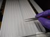 |  | 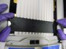 |  |  |
| Placing wick on | Mounting electrodes | Mounting electrodes | Adding of mileral oil | IEF settings ready for focusing |
SECOND DIMENSION SEPARATION-SDS PAGE
Gel casting [12.5% SDS-PAGE]
Step by step Procedure:
- Clean the glass plates and casting system and dry them well.
- Mix the following components and make up the solution to 200 mL with distilled water to prepare a 12.5% gel mix, which is sufficient for two gels:
- Once the gel mix is ready, APS and TEMED are added just before pouring the gels and mixed thoroughly.
- Pour the gel solution in between the glass plates through the filling channel.
- Immediately after pouring, spray a 0.1% SDS solution on top of the gel surface.
- Then allow the gels to polymerize for an hour.
| Bis Acrylamide acrylamide solution (29:1) | 83.30 mL |
| 1.5M Tris-Cl, pH 8.8: | 50 mL |
| 10% SDS solution: | 2 mL |
| 10% APS: | 2 mL |
Equilibration of the IPG strips
- Remove the IPG strips from -20oC storage unit and allow them to thaw for 5 minutes at RT.
- Place the strip for 15 minutes in the rehydration box well containing the equilibration buffer 1 containing DTT [detailed composition provided in the annexure]. Provide gentle shaking on a horizontal shaker.
- Next, transfer the strip to the second rehydration box containing the equilibration solution 2 containing iodoacetamide and subject it to gentle shaking for 15 minutes.
Placement of the strips on SDS Gel surface
- Wash the strip gently after the 2nd equilibration [10 sec] with 1X electrophoresis buffer. [Keep the strip in rehydration tray and flood with buffer].
- Then, place the strip carefully on the gel surface, constantly ensuring that there is no air bubble being trapped.
- The strip side having the ‘+’ sign must face the left.
- Next, pour around 2.5 mL of the lukewarm overlay agarose solution on top of the strips and allow it to solidify for 1 minute. The gel is now ready for electrophoresis.
- Place the ready gels into the electrophoresis tank containing the appropriate buffer, while ensuring that the buffer level matches the mark.
- TRun the set up at 100 V for an hour followed by 350 V.
| 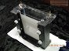 |  |  |  | 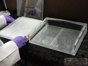 |
| Small gel assembly | Small gel casting | Small gel assembly | Assembly of appartus | Glass plate assembly |
| 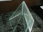 |  | 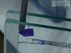 |  |  |
| Glass plate | Glass plate assembly | Mounting of molecular weight marker | Buffer tank | Serum proteins separated on 2DE stained with coomassie |
STAINING AND DESTAINING
- Once electrophoresis is complete, wash the gel thoroughly with distilled water to remove any bound SDS by placing the gel in tray containing distilled water for 5-10 min with intermittent changing of water.
- Then place the gel in a staining solution composed of Coomassie Brilliant Blue for around 5-6 hours with gentle rocking on a mechanical shaker.
- Once staining is complete, transfer the gel to a destaining solution [composition provided in annexure] for 5-6 hours with gentle rocking.
- Finally, wash the destained gel twice with distilled water before scanning
- Carefully place the gel on the imaging platform, capture the image and save it with an appropriate filename.
- Carry out analysis using the software to compare the proteome profiles obtained for the disease & control.
 | 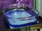 | 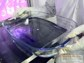 | 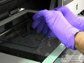 |  |
| Partly stained gel | Destaining process | Destaining process | Imaging of the gel with scanner | Serum proteins separated on 2DE stained with coomassie |
DATA ANALYSIS
It is essential to a analyze the 2-DE gels in order to draw any conclusion about proteome level changes. Analysis is mostly done with the help of software which enables simultaneous comparison of enormous number of spots across various gels. Gels with proteins of various biological conditions such as diseased and healthy, drug treated and untreated can be analyzed to draw a conclusion about unique or differentially expressed proteins. Various links are provided will guide you over the analysis process. These files can be downloaded for use.
A) We have demonstrated the process of analyzing gel using a simulation. This simulation guides you to get a real tome feel of data analysis pattern. You may click HERE to get an access to the simulator. Following are details of the simulation;
- Make match set: This option creates a match between gels. After option is enabled the window displays similar spots over 2 gels. Now one may proceed with getting further information on spots.
- Spot ID: Tracking each spots in the gel on the course of analysis iS made easy be designating each spot with a spot ID. For knowing spot ID of a particular spot, please click on the desired spot and press the button of spot ID. This displays the spot ID of clicked spot and also the corresponding spot in matching gel.
- Molecular weight & pH: Molecular weight & pH of the spot can be displayed by clicking on a spot and followed by clicking the molecular weight option.
- Spot intensity: This is a quantitative measurement of protein across the spots. This is a relative figure value obtained can be further used for statistical analysis.
- Intensity comparison: This is a graphical representation of differences in the intensities. To enable the option, click on the desired spot then click on the option.
- 3-D view: Each spot on the gel can be visualized in a 3D manner. This option displays the intensity of spot in as a peak. Smoothness of the peak depicts the goodness of the spot. This also helps for differentiate between false and original spots.
- Fold change: This option helps the user to conclude on whether or not the spot is differentially is expressed. The fold change number indicates the changes in the protein expression level across the two different biological conditions. Option 9 will display all three options of Intensity comparison 3-D view and Fold change simultaneously.
B) Out put of all three experiments are (3 gel pairs, 2 different biological conditions) available for download in the DOWNLOAD section of the website.
C) Various companies provide analysis softwares on a trial use basis. One may download these software for practicing the analysis of provided 2-DE gel images.
D) You may click to get demonstration on analysis:-Analysis Demonstration.ppt . Analysis is done using one of the commercially available softwares. The power point presentation guides in all the steps right from uploading of the gel till getting the final out put of differential expression.
Result: Comparison of control and drug treated bacterial proteome will reveal the proteome level alterations as a consequence of drug treatment. Differential expression between the gels (control and drug treated) can be studied by comparing intensities of various spots thereby knowing which protein get up-regulated or down-regulated. In addition to the comparison between test and control, a match set can be created for all the gels which will provide an understanding into number of spots that are different across the gels , by what percentage they vary in other parameters like intensity, size etc. Differentially expressed protein spots in drug treated samples identified in 2DE analysis can be subjected to MS analysis to reveal the identity of the proteins. Details of MS analysis using MALDI-TOF MS have been described in the next module.

1. Plant Protein Extraction
|
| This video shows the process of homogenization of plant leaves followed by precipitation of proteins using TCA and acetone. The prepared protein extract is used for further studies. |
2. Protein Quantification
|
| Following protein extraction, the separated proteins must be quantified. Here, we depict the process of quantification of standard and sample proteins using the Bradford assay. |
3. First Dimension- Isoelectric Focusing
|
| This video demonstrates the steps involved in isoelectric focusing, which separates proteins in their first dimension based on their isoelectric points. This includes rehydration of the IPG strips and focusing. |
4. Second Dimension - SDS PAGE
|
| This video depicts the steps involved in separation of proteins in the second dimension based on their molecular weight. It involves assembly of the gel apparatus, gel casting, equilibration of the IPG strip and electrophoresis. |
5. Staining and Destaining
|
| After completion of electrophoresis, the gels must be stained for visualization of the spots. This involves removal of the gel from the 2-DE unit, fixing of protein bands, staining with suitable dye solution and finally, destaining to view the stained protein bands. |
6. Data Analysis
|
| This video takes the user through the process of gel data analysis in a stepwise manner using a 2-DE analysis software. This will enable the user to perform analysis independently when provided with raw gel images and suitable software. |


References :
1. Chen JH, et al, Plasma proteome of severe acute respiratory syndrome analyzed by two-dimensional gel electrophoresis and mass spectrometry. Proc Natl Acad Sci USA 2004, 7; 101(49):17039-44.
2. Eymann C, et al,Comprehensive proteome map of growing Bacillus subtilis cells. Proteomics. 2004, 2849-76.
3. Maldonado A M, et al, Evaluation of three different protocols of protein extraction for Arabidopsis thaliana leaf proteome analysis by two-dimensional electrophoresis. Proteomics 2008, 71(4):461-72.
4. Angelika Gorg, et al, Current two-dimensional electrophoresis technology for proteomics. Proteomics 2004 with 2DE Tutorials : http://www.wzw.tum.de/blm/deg/
5. Walter W, et al, Two-Dimensional Electrophoresis for Plant Proteomics. Methods in Molecular Biology, 2007.
6. Wei W et al, Protein extraction for two-dimensional electrophoresis from olive leaf, a plant tissue containing high levels of interfering compounds. Electrophoresis, 2003.
Books:
1. Jeremy M. Berg and John Tymoczko & Lubert Stryer (2002). Biochemistry, 5th edition. W.H.Freeman &Co Ltd.
2. Albert L. Lehninger , David L.Nelson & Michael M. Cox(2008).Lehningers Principles Of Biochemistry, 4th edition. W.H.Freeman &Co Ltd.
3. Donald Voet & Judith G. Voet (2010) Biochemistry 4th edition. US :John Wiley & Sons.